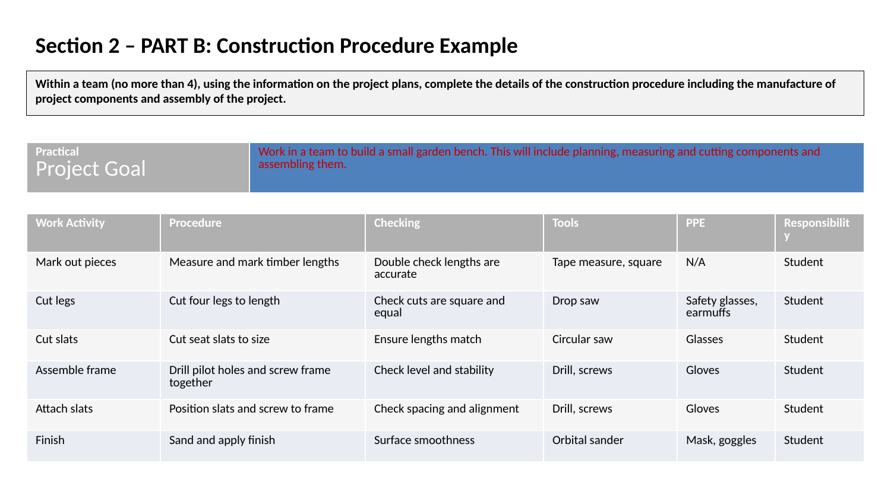
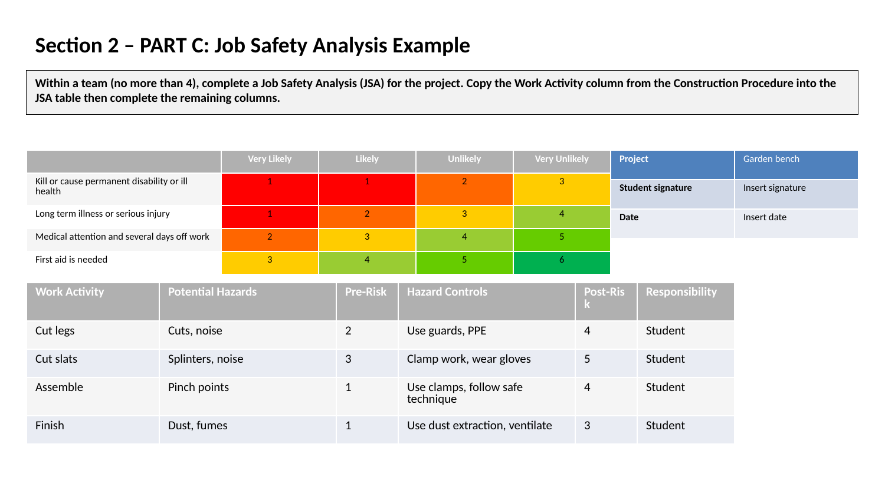
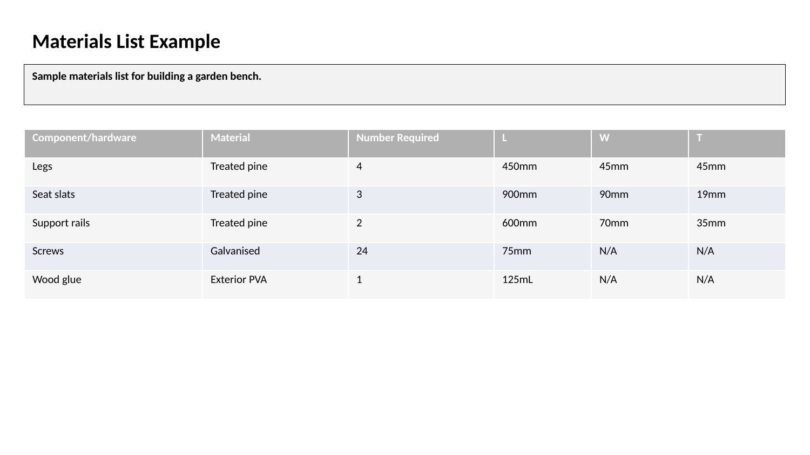
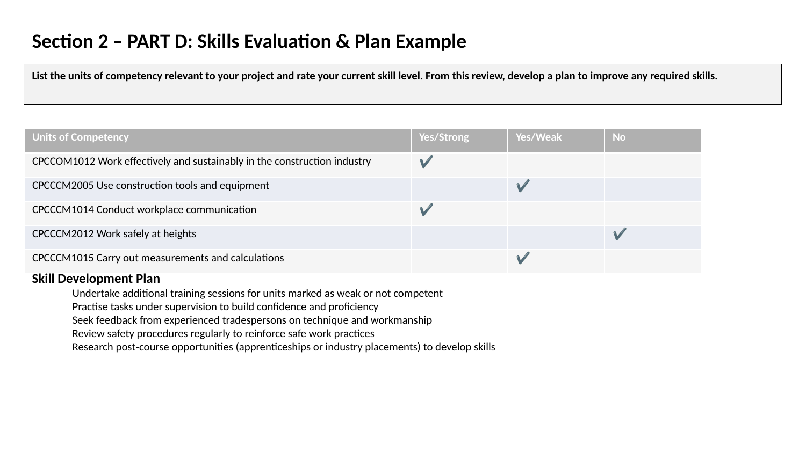
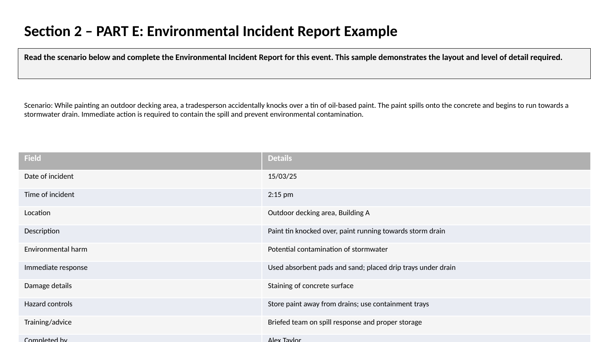

The Project Planning Process
Successfully planning a construction project involves a series of logical steps to ensure the work is completed safely, efficiently, and to the correct standard. This is a team effort.
- Read and Interpret Documents: The first step is to thoroughly review all relevant project documents, including plans, specifications, and safety requirements.
- Determine Task Requirements: Break the overall project down into a sequence of smaller, manageable tasks.
- Estimate Requirements: For each task, estimate the necessary resources:
- Time: How long will each task take?
- Personnel: Who is needed to do the work? Who is responsible for each task?
- Tools & Equipment: What tools and machinery are required?
- Materials: What materials are needed and in what quantity?
- Plan and Sequence: Organise the tasks into a logical order. Some tasks will depend on others being completed first.
- Communicate and Consult: Work with team members to allocate roles and responsibilities, review the plan, and discuss safety.
- Record the Plan: Document the plan using tools like Work Plans, Gantt Charts, and Material Lists.
- Review and Adapt: Continuously review the plan as the project progresses and make adjustments as needed.
Key Safety & Workplace Documents for Planning
Planning isn't just about the build; it's about building safely. You must consult these documents during the planning phase.
- Job Safety Analysis (JSA) / Safe Work Method Statement (SWMS): These documents are central to planning safe work. They involve identifying the hazards associated with each step of a job and listing the control measures that will be put in place to manage the risks.
- Standard Operating Procedures (SOPs): These are the workplace's own step-by-step instructions for how to safely perform a specific task or use a piece of machinery.
- Codes of Practice: Provide practical guidance on meeting WHS requirements for specific tasks or industries.
- Environmental Management Plan: Outlines how the project will manage its environmental impact, including dust, noise, waste, and sediment control. This must be considered when planning activities.
Sample Planning Activity Sheets
The following examples illustrate how to complete various planning documents used in construction projects. They are provided for practice only and do not correspond to your assessment tasks.
    